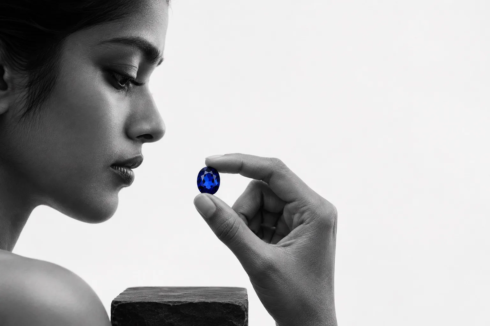

Up close
The cut decides how the blue is seen.
Angles and proportions send the light back through the stone. That is the work of our stonecutters.

Master stonecutters of Ceylon
Sapphires cut by our own stonecutters, shown in daylight and lamplight before you decide.
Up close
Angles and proportions send the light back through the stone. That is the work of our stonecutters.
The cutting
Each stone is shaped at the house's own wheel, one facet at a time, so the blue is bright from edge to edge.
Look closer
A quiet turn. A different perspective.
Every part is a choice
Choose the gemstone. Explore the setting. Choose your metal.
Coming together
The details find their place. A piece begins to feel like yours.
Generated sample. A design study, not a claim about stock or availability.
Seen in two lights
A sapphire changes with the light. Drag the line to see a stone by the window and under the lamp. At a viewing you see both before you decide.
DaylightLamplight
How a sapphire is judged
General gem knowledge, not a description of any one stone.
Where it begins
Sri Lanka's river gravels have given up sapphires for centuries. What a rough stone becomes depends on the hands that cut it.
Start with the stone or with the piece it could become. Ask about any of them and we will show it to you by appointment.
Ask about this pieceOval blue sapphire, loose
By private appointment
The pictures on this page are generated samples, standing in for the house's own photographs.